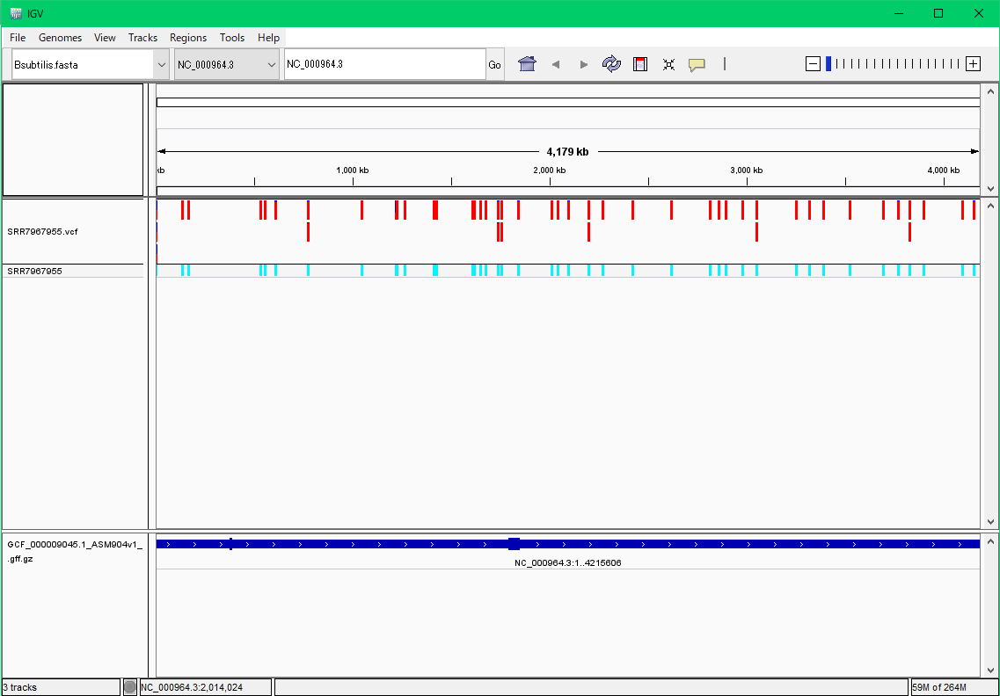
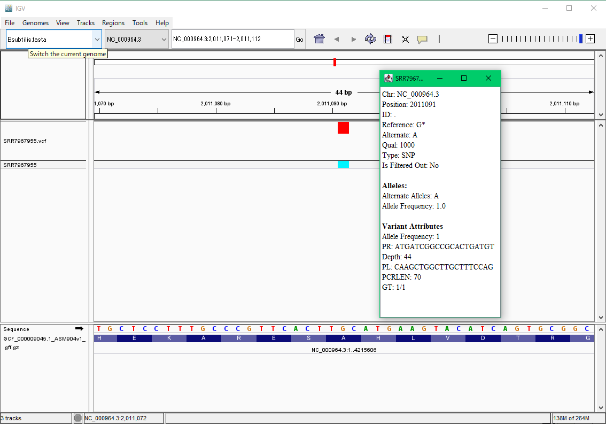

|  |
|
$ sudo apt update $ sudo apt upgrade $ sudo apt install curl $ sudo apt install git $ sudo apt install sra-toolkit $ git clone https://github.com/akiomiyao/ped.git
$ tar xvfz sratoolkit.2.x.x-ubuntu64.tar.gz $ cd xvfz sratoolkit.2.x.x-ubuntu64/bin $ sudo mv fastq-dump-orig.2.x.x /usr/local/bin/fastq-dump.x.x is version number, will be changed with update by NCBI.
$ cd ped $ git pull $ perl download.pl accession=SRR7967955Scripts are updated by git pull command.
$ perl check_length.pl SRR7967955 Omitted above 290 4868 291 4953 292 3574 293 2917 294 4086 295 2267 296 5828 297 9657 298 32047 299 80536 300 536716 301 1153100Because PED requires fixed length short read sequences, clipping option is required.
$ perl ped.pl target=SRR7967955,ref=Bsubtilis,clipping=150Since Bsubtilis reference file is already configured, data are automatically downloaded and calculated.
$ sudo apt install docker $ sudo apt install docker.io
$ sudo docker pull akiomiyao/ped $ sudo docker run -w /ped -v `pwd`:/work akiomiyao/ped perl download.pl accession=SRR7967955,wd=/work $ sudo docker run -w /ped -v `pwd`:/work akiomiyao/ped perl check_length.pl accession=SRR7967955,wd=/work $ sudo docker run -w /ped -v `pwd`:/work akiomiyao/ped perl ped.pl target=SRR7967955,ref=Bsubtilis,clipping=150,wd=/workCopy and paste commands described above to your terminal window, change values of accession, target and clipping, and run.